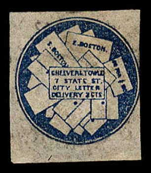
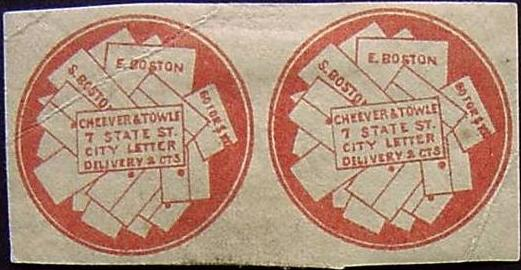
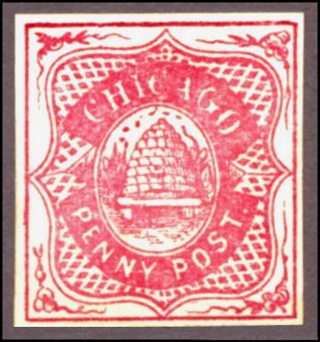
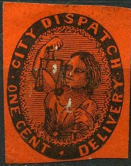
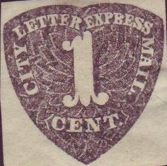

{kind=link}

The lettering is much larger in these forgeries.
Return To Catalogue - United States locals overview - Broadway to Carters - City Mail Free Stamp to Cummings - United States
Note: on my website many of the
pictures can not be seen! They are of course present in the cd's;
contact me if you want to purchase the catalogue.
Bundle of letters in circle (a similar design was issued by Hale & Co).

Genuine stamp
2 c blue
There are 6 different kinds of reprint/forgeries of these stamps, often in bogus colors.
Forgeries:
The lettering is much larger in these forgeries.

Forgeries
I've seen another forgery with the '7' exactly above the 'C' of 'CITY'.
Some kind of 'reprint', I've seen whole sheets of these stamps.
Beehive in an oval, surrounded by ornaments
(Genuine stamps)
Many forgeries exist (at least 8?), I don't think the images below are genuine. The genuine stamp should have the colour orange-brown, it was issued in 1862.
(there is a dot behind 'PENNY' in the above stamp)
(I've been told that this is a reprint)
Note the wrong colours and the strange upper shape of the second 'C' of 'CHICAGO' in the following 'reprints':
(Reduced size)

Another forgery, with the square pattern different from the
genuine stamp. It appears to have been based on an illustration
illustration of the Moens catalogue from
1864 (second image, taken from 'Les Timbres-Poste Illustres' by
J.-B.Moens 1864, plate 54), showing this forgery rather than the
genuine stamp.
'Reprint' (actually a forgery) made in 1935 by the Chicago
Philatelic Society. The word 'CHICAGO' is not tall enough, for
example the 'O' of this word is too rounded.
Cincinnati City Delivery 64 west 3D St
This stamp was issued in 1883, it is not very rare (remainders exist and were sold to stamp collectors).
Note, the very close resemblance in design, with the following 'St.Louis' stamp:
Genuine
For stamps in this or similar designs click here.
Taylor made forgeries of these stamps in various colours, I suspect the next stamps to be such Taylor forgeries:
Taylor forgeries?
(Genuine, image obtained from a Siegel auction)
This stamp was issued in 1851, in St.Louis, only two stamps have survived (this one and one on a letter).
Another stamp with inscription 'CITY ONE CENT DISPATCH' seems to have been issued in Baltimore (colour: black on lilac), I do not have a picture of this stamp (it is extremely rare).
(Genuine on letter, reduced size, image obtained from a Siegel
auction: http://www.siegelauctions.com/1999/817/yf817145.htm )
Two stamps with this inscription were issued in New Orleans; black on green and black on lilac. They are extremely rare.
(Reduced size)
Only the 1 c black was issued, this stamp is not very rare. All other colours are reprints or forgeries? I have seen the values: 1 c lilac, 1 c black on green and 1 c red.

Forgeries
(The only copies of the black and red on yellow stamps, both on
letter, reduced sizes)
(a black on lilac stamp on letter)
Issued in 1846. Inscription 'CITY Express Post 2 cts' black with ornamental border or 'CITY EXPRESS POST' with a dove (black on lilac or red on yellow). They were issued in Philadelphia and are extremely rare. The black stamp and the red on yellow stamp are unique. There are only 6 black on lilac stamps known to exist. Some of the pictures above are obtained from a Siegel auction: http://www.siegelauctions.com/1999/817/yf817147.htm
For a stamp with inscription 'CITY EXPRESS POST' in the value 1 c see under Adams City Express Post.
This stamp was issued in 1868. Stamps in a similar design exist for the Carnes City Letter Express.
(1 c red, reduced size)
(the unique 2 c on letter)
Issued in 1856 for Newark, extremely rare. Two values exist 1 c red and 2 c red (only one known to exist). The design is similar to the Metropolitan Express (see there). Above pictures obtained from a Siegel auction: http://www.siegelauctions.com/1999/817/yf817148.htm
Forgery known as 'Moens forgery'

I've been told that this is a reprint.
City Mail Free Stamp to Cummings
{kind=link}
{kind=link}
{kind=link}
{kind=link}
{kind=link}
{kind=link}